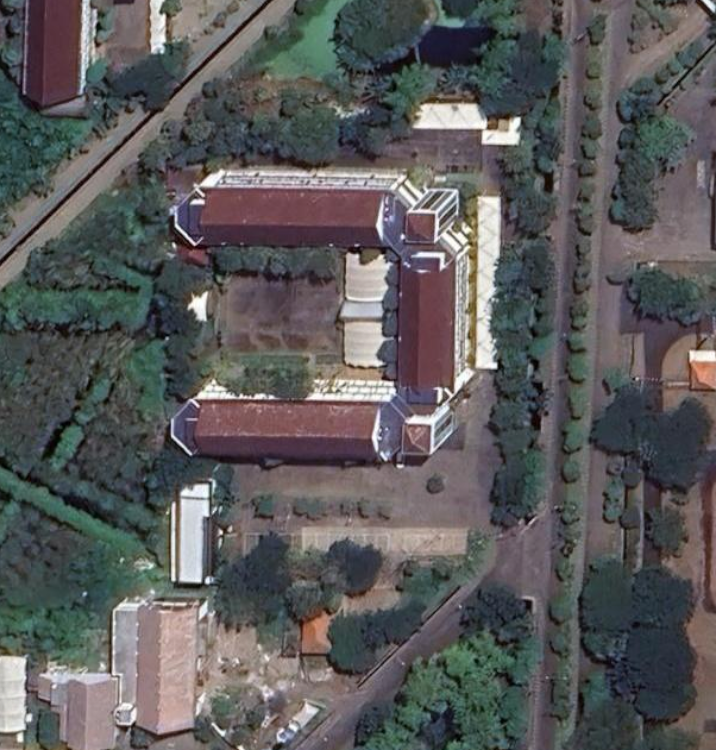

-- FPS
Memuat...
Panduan Navigasi
Kamera Bebas (Free Camera)
Berlaku untuk scene eksterior dan sebagian besar scene interior
| Klik layar | Mulai navigasi, kursor terkunci |
| W / A / S / D | Maju / kiri / mundur / kanan |
| Mouse | Arahkan pandangan kamera |
| Scroll ↑ | Tambah kecepatan gerak |
| Scroll ↓ | Kurangi kecepatan gerak |
| Shift | Sprint — gerak lebih cepat |
| ESC | Lepas kursor, berhenti navigasi |
Kamera Orbit (Orbit Camera)
Berlaku untuk Ruang Rapat, Ruang Dosen IF-227, Ruang Kelas IF-112
| Drag mouse | Putar kamera mengelilingi objek |
| Scroll ↑ / ↓ | Zoom in / zoom out |
Ganti Scene
| Tombol Scene | Buka daftar semua scene |
| Klik scene | Pindah ke scene yang dipilih |
| Tombol Kembali | Kembali ke scene eksterior |
Peta Lokasi

Info Rekonstruksi
Tipe Model
—
Jumlah Splat
—
Jumlah Citra
—
Waktu Training
—
Pilih Scene
Foto Asli
↕
Render 3DGS